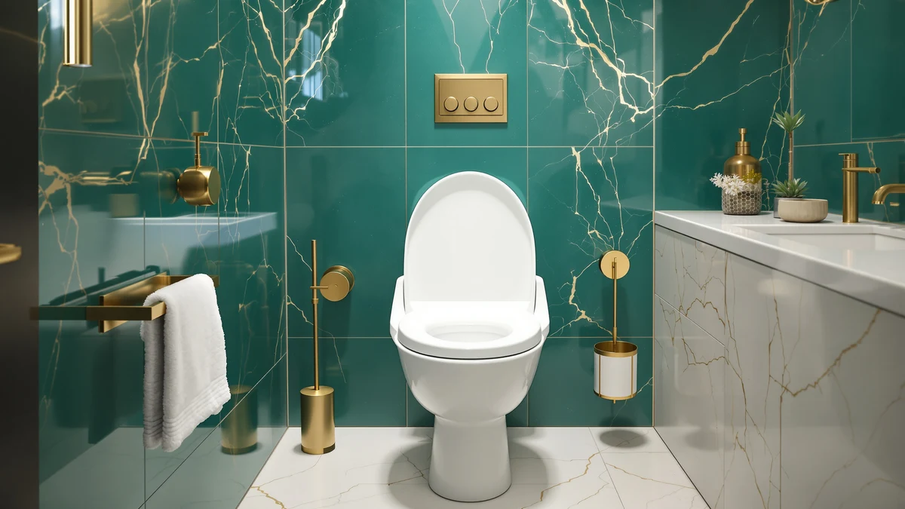

Toilet Chair vs Standard Height (2026)
Prices and picks verified as of August 2026. Independent, reader-supported reviews.


Things to Know Before You Buy
- A toilet chair adjusts from about 17 to 23 inches; a standard-height toilet is fixed at 14 to 15 inches.
- Toilet chairs need no plumbing work and move between the bedroom, bathroom, and shower.
- Medicare and most private insurers cover a toilet chair as durable medical equipment with a prescription; a standard-height toilet almost never qualifies.
- A standard-height toilet is the better long-term fixture for a permanent bathroom, since it looks and functions like a normal toilet.
- For recovery periods under a year, a toilet chair or a raised seat is usually cheaper and faster than remodeling.
The toilet chair vs standard height question comes up most often after surgery, a fall, or a diagnosis that changes how someone gets on and off the toilet day to day. One option bolts to the floor and stays there for decades. The other is a portable seat you can carry between rooms and return to the store if you end up not needing it.
We compared the two on build, price, and what daily use actually feels like, based on the height standards manufacturers publish and the way occupational therapists typically recommend equipment for short-term versus permanent needs. Neither option is universally better. A standard-height toilet wins for anyone who wants their bathroom to look and work like a normal bathroom for years to come, while a toilet chair wins when you need height and support now, without construction or a plumber.
Quick Answer
If you are recovering from surgery, dealing with a temporary mobility limit, or caring for someone who needs support without a home remodel, get a toilet chair. It adjusts in height, needs no installation, and moves with you. If you are renovating a bathroom for permanent use or want a fixture that never looks like medical equipment, a standard-height toilet paired with a raised or comfort-height seat is the better long-term investment.
What is Toilet Chair?
A toilet chair, also called a bedside commode, is a freestanding frame with a seat, armrests, and legs that adjust in height, usually from 17 to 23 inches off the floor. Most models come with a removable bucket and lid, which lets you use the chair as a standalone commode next to a bed. The same frame typically straddles an existing toilet, turning it into a raised seat with side support, or moves into a shower stall for bathing. That three-in-one design is the main reason hospitals, rehab centers, and home health agencies default to a toilet chair rather than a fixed installation.
Frames are usually powder-coated steel or aluminum, with a weight capacity between 250 and 500 pounds depending on the model, and bariatric versions rated up to 650 pounds. The armrests give you something to push against when standing, which matters more than seat height alone for anyone with weak hip or knee muscles. Setup takes a few minutes with no tools, and the whole unit folds or breaks down for storage and travel. The tradeoff is appearance and permanence: a toilet chair looks like medical equipment, and most people plan to stop using one once mobility improves or a permanent bathroom fix is in place. That tradeoff is the toilet chair vs standard height decision, since a standard-height toilet gives up that adjustability for a fixture that looks and lasts like a normal bathroom.
What is Standard Height?
A standard-height toilet measures 14 to 15 inches from the floor to the top of the seat, the dimension American plumbing manufacturers used for decades before comfort-height models became common. It bolts permanently to the floor flange and connects to the home's water supply and drain line, so installing or replacing one requires either DIY plumbing skills or a licensed plumber. Most builder-grade toilets sold before the 2010s, and plenty sold today, still ship at this height, especially in older homes and rental units.
The lower seat means a deeper knee bend to sit down and more leg strength to stand back up, which is fine for most able-bodied adults but harder on anyone recovering from joint surgery, dealing with arthritis, or managing balance issues. You can raise the effective height with a toilet seat riser or a comfort-height replacement seat without swapping the whole fixture, though neither adds the armrests a toilet chair provides. A standard-height toilet still wins on appearance, resale value, and long-term durability, since it is a permanent part of the home rather than an add-on.
Head-to-Head: Build Quality & Durability
A standard-height toilet is built to last 20 to 30 years with basic maintenance. Vitreous china does not corrode, the flush mechanism is the only part that wears out, and a well-installed unit handles daily use without loosening or wobbling. A toilet chair has a shorter service life, typically 3 to 7 years of regular use, because the moving joints at the height-adjustment legs and the folding hinges take repeated stress that a fixed toilet never experiences.
The toilet chair wins on weight capacity and stability during transfers. A well-built steel frame with a wide base resists tipping better than most people expect, and the armrests give a stable handhold that a standard-height toilet cannot offer without a separate grab bar installation. Rubber feet with non-slip pads keep the chair from sliding on tile, though you should check that pads periodically since they wear down faster on textured bathroom flooring. In this toilet chair vs standard height matchup on durability, the fixed toilet lasts longer, but the chair's stability features address a different problem: the seconds-long transfer on and off the seat.
Head-to-Head: Price & Value
A basic toilet chair costs $35 to $80, and a heavier-duty or drop-arm model runs $100 to $250. Since Medicare Part B and most private insurers cover durable medical equipment with a doctor's prescription, many people pay little to nothing out of pocket after meeting a deductible. A standard-height toilet costs $150 to $500 for the fixture, and installation adds $150 to $300 if you hire a plumber, with no insurance coverage available because it counts as a home fixture rather than medical equipment.
For a short recovery window, the toilet chair vs standard height cost comparison favors the chair by a wide margin, especially with insurance covering part of the bill. For a permanent bathroom upgrade, the standard-height toilet or a comfort-height replacement adds resale value that a rented or purchased commode never will, which changes the math if you plan to stay in the home for years.
Head-to-Head: Use Experience
Sitting down and standing up is where the toilet chair vs standard height difference shows up most. A taller seat with armrests reduces the knee bend by several inches and gives you two stable points to push against, which is exactly what surgeons ask patients to protect after hip or knee replacements. You feel the difference immediately: less strain, less risk of a sudden drop onto the seat, and a shorter path back to standing.
A standard-height toilet asks more of your legs and knees, but it looks, sounds, and functions like every other toilet in the house, which matters for anyone self-conscious about visible medical equipment in the bathroom. Guests do not notice a standard-height toilet. They do notice a commode chair parked next to the tub. Noise and cleaning also differ: a toilet chair's bucket needs regular emptying and rinsing if used as a bedside commode, while a standard-height toilet flushes waste away automatically. In practice, the toilet chair is easier on the body but harder on daily upkeep, while the standard-height toilet is the reverse.
When to Choose Toilet Chair
Choose a toilet chair when you need height and support right away and cannot wait on a remodel or plumber's schedule. This covers post-surgical recovery from hip, knee, or spinal procedures, temporary mobility loss after a fall or illness, and situations where a caregiver needs a bedside option for someone who cannot walk to the bathroom overnight. The adjustable height lets you dial in the exact seat position a physical therapist recommends, and you can lower or raise it again as strength returns.
A toilet chair also makes sense in a rental unit or a bathroom you cannot modify, since it requires no installation and leaves no permanent marks. Bariatric users benefit from the higher weight capacity and wider seat many toilet chair models offer compared with a standard toilet seat riser. If insurance is covering part of the cost, the toilet chair vs standard height decision usually tilts toward the chair for anyone facing a recovery timeline under a year.
When to Choose Standard Height
Choose a standard-height toilet, or upgrade to a comfort-height version, when you are renovating a bathroom for permanent use and mobility is not an immediate concern. Comfort-height toilets now measure 17 to 19 inches, close to ADA guidelines, without looking like medical equipment or requiring a separate chair in the room. This is the right call for aging-in-place planning, where you want a bathroom that works for decades rather than a solution built around a specific recovery period.
It also wins when appearance and resale value matter. A standard or comfort-height toilet blends into the bathroom the way buyers and guests expect, while a toilet chair signals a temporary or medical setup even when it is not in the way. If your household includes both kids and adults, a standard-height toilet paired with a step stool solves the reach problem without the bulk of a full toilet chair frame.
Our Top Picks
If you have decided your bathroom needs a standard-height toilet rather than a chair, upgrading the seat itself is the easiest way to add comfort without replacing the whole fixture. These three cover the range from a classic wood finish to a family-friendly design with a built-in toddler seat.

Editor’s Pick
Wooden Toilet Seat Round with
A classic wood seat with metal hinges for anyone who wants their standard-height toilet to look like furniture, not a medical fixture.
$42.99
Check Price on Amazon
Best Value
1M Family Toilet Seat Patented
Slow-close hinges and a built-in toddler ring make this the practical pick for a family bathroom on a standard-height toilet.
$39.99
Check Price on Amazon
Premium Choice
1M Family Toilet Seat Patented
The same anti-wiggle, slow-close design in a round profile for standard-height toilets with a smaller bowl.
$39.99
Check Price on AmazonHow much taller is a toilet chair than a standard-height toilet?
A toilet chair typically sits 17 to 23 inches off the floor and adjusts with leg extenders.
Does insurance cover a toilet chair?
Medicare Part B and many private insurers cover a toilet chair as durable medical equipment with a doctor's prescription, usually after your deductible.
Frequently Asked Questions
How much taller is a toilet chair than a standard-height toilet?
A toilet chair typically sits 17 to 23 inches off the floor and adjusts with leg extenders. A standard-height toilet measures 14 to 15 inches. Comfort-height toilets close some of that gap at 17 to 19 inches, but a toilet chair still adjusts further and installs instantly.
Does insurance cover a toilet chair?
Medicare Part B and many private insurers cover a toilet chair as durable medical equipment with a doctor's prescription, usually after your deductible. A standard-height toilet or seat upgrade almost never qualifies, since it counts as a home fixture rather than medical equipment.
Can I install a toilet chair over my existing toilet?
Yes. Most three-in-one toilet chairs straddle an existing standard-height toilet, raising the seat height with no plumbing work. The same frame doubles as a bedside commode or a shower seat, which is why families often prefer it over a fixed-height toilet.
Is a standard-height toilet harder to use after surgery?
For most people recovering from hip or knee surgery, yes. A 14 to 15 inch seat forces a deeper knee bend and more leg strength to stand. A toilet chair or raised seat closes that gap during the first 6 to 12 weeks of recovery.
What is the price difference between a toilet chair and a standard-height toilet?
A basic toilet chair costs $35 to $80, and a bariatric model runs $100 to $250. Replacing a standard-height toilet with a comfort-height model costs $150 to $500, plus $150 to $300 for a plumber. The toilet chair is the cheaper, faster fix for temporary needs.
Final Verdict
The toilet chair vs standard height decision comes down to timeline. Pick the toilet chair for a recovery window under a year, a rental you cannot modify, or a caregiving setup that needs a bedside option tonight. Pick a standard-height or comfort-height toilet when you are planning years ahead and want a permanent fixture instead of equipment you will eventually return or store. If you are staying with a standard-height toilet, our Editor's Pick is the Wooden round wood seat, a straightforward upgrade that installs in minutes and does not change how your bathroom looks or functions.